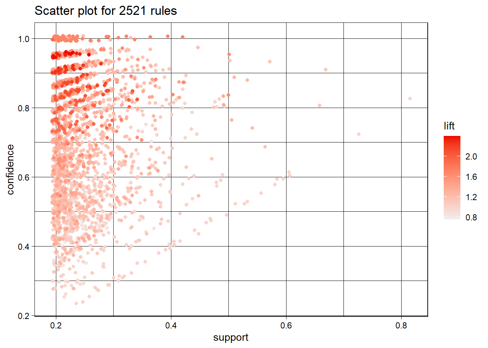
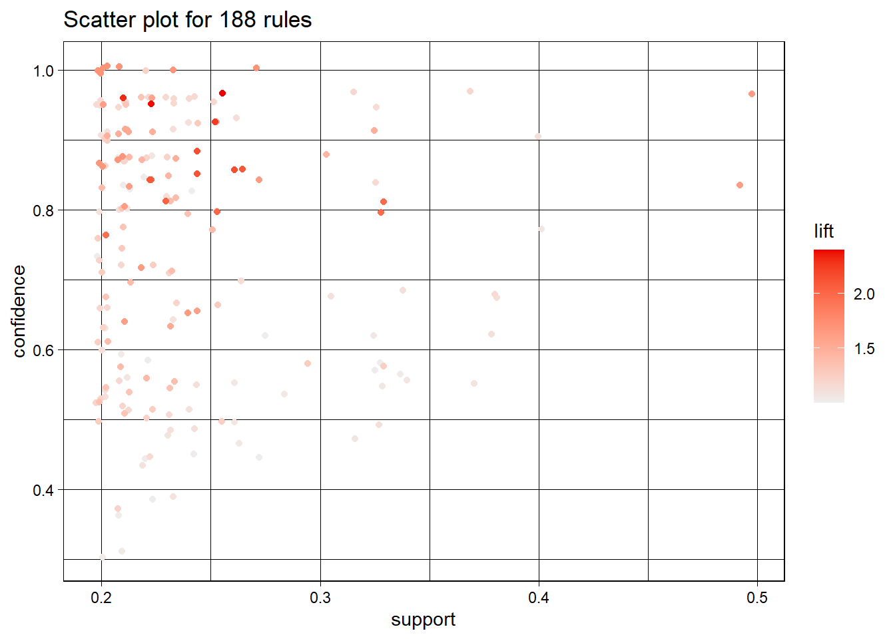
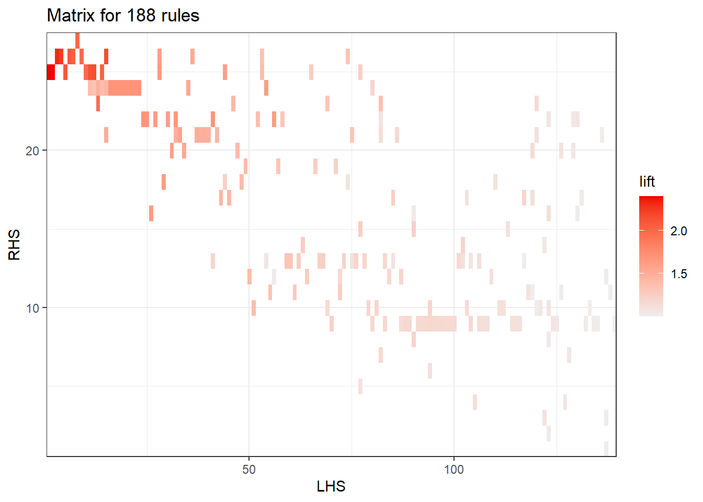

Chapter 3 Reglas de Asociación
En este capítulo se tratará el tema de reglas de asociación con los paquetes “arules” y “arulesViz” para extraer conocimiento del dataset que previamente ha sido preprocesado.
3.1 Cargar librerias necesarias
library(tidyverse)
library(arules)
library(arulesViz)
dataset <- read.csv("dataset_Andres.csv")3.2 En primer lugar, utilizamos el algoritmo apriori para calcular las reglas.
reglas <- apriori(dataset, parameter = list(support=0.2, confidence=0.1))## Apriori
##
## Parameter specification:
## confidence minval smax arem aval originalSupport maxtime support minlen
## 0.1 0.1 1 none FALSE TRUE 5 0.2 1
## maxlen target ext
## 10 rules TRUE
##
## Algorithmic control:
## filter tree heap memopt load sort verbose
## 0.1 TRUE TRUE FALSE TRUE 2 TRUE
##
## Absolute minimum support count: 19
##
## set item appearances ...[0 item(s)] done [0.00s].
## set transactions ...[405 item(s), 95 transaction(s)] done [0.00s].
## sorting and recoding items ... [41 item(s)] done [0.00s].
## creating transaction tree ... done [0.00s].
## checking subsets of size 1 2 3 4 5 6 done [0.00s].
## writing ... [2521 rule(s)] done [0.00s].
## creating S4 object ... done [0.00s].length(reglas)## [1] 2521inspect(reglas[150:160])## lhs rhs support confidence coverage lift count
## [1] {Are.you.actively.applying.for.job.=No} => {Marital.status=Single} 0.2842105 0.8181818 0.3473684 0.9965035 27
## [2] {Marital.status=Single} => {Are.you.actively.applying.for.job.=No} 0.2842105 0.3461538 0.8210526 0.9965035 27
## [3] {Are.you.receiving.response.from.recruiter.after.applying.=Maybe} => {Did.you.switch.your.career.=Yes} 0.2105263 0.5882353 0.3578947 1.4328808 20
## [4] {Did.you.switch.your.career.=Yes} => {Are.you.receiving.response.from.recruiter.after.applying.=Maybe} 0.2105263 0.5128205 0.4105263 1.4328808 20
## [5] {Are.you.receiving.response.from.recruiter.after.applying.=Maybe} => {Preference.of.work=Hybrid} 0.2000000 0.5588235 0.3578947 1.1797386 19
## [6] {Preference.of.work=Hybrid} => {Are.you.receiving.response.from.recruiter.after.applying.=Maybe} 0.2000000 0.4222222 0.4736842 1.1797386 19
## [7] {Are.you.receiving.response.from.recruiter.after.applying.=Maybe} => {Dream.company.type.=MNC} 0.2105263 0.5882353 0.3578947 1.0160428 20
## [8] {Dream.company.type.=MNC} => {Are.you.receiving.response.from.recruiter.after.applying.=Maybe} 0.2105263 0.3636364 0.5789474 1.0160428 20
## [9] {Are.you.receiving.response.from.recruiter.after.applying.=Maybe} => {Currently.employed=Yes} 0.2315789 0.6470588 0.3578947 1.0976891 22
## [10] {Currently.employed=Yes} => {Are.you.receiving.response.from.recruiter.after.applying.=Maybe} 0.2315789 0.3928571 0.5894737 1.0976891 22
## [11] {Are.you.receiving.response.from.recruiter.after.applying.=Maybe} => {Are.you.still.studying.=No} 0.2421053 0.6764706 0.3578947 1.1080122 23plot(reglas)## To reduce overplotting, jitter is added! Use jitter = 0 to prevent jitter.
3.3 Eliminar redundancia
reglas_simplificadas <- reglas[-c(which(is.redundant(reglas)))]
length(reglas_simplificadas)## [1] 12933.4 Filtar las reglas significantes
rs_significantes <- subset(reglas,is.significant(reglas_simplificadas, transactions.obj, method = "fisher"))
length(rs_significantes)## [1] 2163.5 Filtrar por lift
De esta manera, nos quedaremos con las reglas relevantes y descartaremos algunas que no nos interesan en el análisis.
relevantes <- subset(rs_significantes, subset=lift > 1)
length(relevantes)## [1] 1883.6 Ordenar por confianza
reglas_ordenadas <- sort(relevantes, by = "confidence")
plot(reglas_ordenadas)## To reduce overplotting, jitter is added! Use jitter = 0 to prevent jitter.
3.7 Gráfico de matriz
plot(reglas_ordenadas, method="matrix")## Itemsets in Antecedent (LHS)
## [1] "{Marital.status=Single,Currently.employed=No,Did.you.switch.your.career.=No}"
## [2] "{Marital.status=Single,Currently.employed=No,Did.you.have.a.career.break.=No,Did.you.switch.your.career.=No}"
## [3] "{Age.group=<25,Work.experience=Fresher,Did.you.have.a.career.break.=No,Did.you.switch.your.career.=No}"
## [4] "{Marital.status=Single,Work.experience=Fresher,Did.you.switch.your.career.=No}"
## [5] "{Age.group=<25,Marital.status=Single,Currently.employed=No,Did.you.have.a.career.break.=No}"
## [6] "{Age.group=<25,Marital.status=Single,Work.experience=Fresher}"
## [7] "{Age.group=<25,Are.you.still.studying.=Yes,Did.you.have.a.career.break.=No}"
## [8] "{Currently.employed=Yes,Did.you.switch.your.career.=Yes}"
## [9] "{Work.experience=Fresher}"
## [10] "{Currently.employed=No}"
## [11] "{Marital.status=Single,Currently.employed=No,Did.you.have.a.career.break.=No}"
## [12] "{Age.group=<25,Marital.status=Single,Currently.employed=No}"
## [13] "{Age.group=<25,Marital.status=Single,Work.experience=Fresher,Currently.employed=No}"
## [14] "{Age.group=<25,Currently.employed=No,Did.you.have.a.career.break.=No}"
## [15] "{Marital.status=Single,Work.experience=Fresher,Did.you.have.a.career.break.=No}"
## [16] "{Are.you.still.studying.=No,Reason.for.shift.in.career.=Not applicabe}"
## [17] "{Age.group=<25,Work.experience=Fresher,Reason.for.shift.in.career.=Not applicabe}"
## [18] "{Work.experience=Fresher,Did.you.have.a.career.break.=No,Reason.for.shift.in.career.=Not applicabe}"
## [19] "{Are.you.still.studying.=No,Did.you.have.a.career.break.=No,Reason.for.shift.in.career.=Not applicabe}"
## [20] "{Marital.status=Single,Work.experience=Fresher,Did.you.have.a.career.break.=No,Reason.for.shift.in.career.=Not applicabe}"
## [21] "{Marital.status=Single,Currently.employed=No,Did.you.have.a.career.break.=No,Reason.for.shift.in.career.=Not applicabe}"
## [22] "{Age.group=<25,Marital.status=Single,Reason.for.shift.in.career.=Not applicabe,What.are.the.problems.faced.while.job.search.=Lack of experience}"
## [23] "{Marital.status=Single,Did.you.have.a.career.break.=No,Reason.for.shift.in.career.=Not applicabe,What.are.the.problems.faced.while.job.search.=Lack of experience}"
## [24] "{Age.group=<25,Marital.status=Single,Currently.employed=No,Did.you.switch.your.career.=No}"
## [25] "{Age.group=<25,Marital.status=Single,Did.you.switch.your.career.=No,What.are.the.problems.faced.while.job.search.=Lack of experience}"
## [26] "{Marital.status=Single,Currently.employed=Yes,Have.you.carried.out.any.independent.works.or.projects.=No}"
## [27] "{Are.you.still.studying.=No,Did.you.switch.your.career.=No}"
## [28] "{Age.group=<25,Marital.status=Single,Did.you.switch.your.career.=No}"
## [29] "{Age.group=<25,Did.you.have.a.career.break.=No,Are.you.receiving.response.from.recruiter.after.applying.=Yes}"
## [30] "{Age.group=<25,Work.experience=Fresher,Did.you.switch.your.career.=No}"
## [31] "{Work.experience=1-2years,Are.you.still.studying.=No,Did.you.have.a.career.break.=No,Have.you.carried.out.any.independent.works.or.projects.=No}"
## [32] "{Marital.status=Single,Work.experience=Fresher,Did.you.have.a.career.break.=No,Did.you.switch.your.career.=No}"
## [33] "{Are.you.still.studying.=Yes,Currently.employed=No,Did.you.have.a.career.break.=No}"
## [34] "{Are.you.still.studying.=No,What.are.the.problems.faced.while.job.search.=No response from recruiter}"
## [35] "{Age.group=<25,Work.experience=Fresher,Currently.employed=No,Did.you.have.a.career.break.=No}"
## [36] "{Age.group=<25,Did.you.have.a.career.break.=No,Did.you.switch.your.career.=No}"
## [37] "{Marital.status=Single,Work.experience=Fresher,Currently.employed=No,Did.you.have.a.career.break.=No}"
## [38] "{Marital.status=Single,Did.you.have.a.career.break.=No,What.are.the.problems.faced.while.job.search.=Lack of experience}"
## [39] "{Marital.status=Single,Currently.employed=No,Did.you.switch.your.career.=No,Reason.for.shift.in.career.=Not applicabe}"
## [40] "{Marital.status=Single,Work.experience=Fresher,Are.you.still.studying.=Yes,Currently.employed=No}"
## [41] "{Age.group=<25,Marital.status=Single,Work.experience=Fresher,Did.you.switch.your.career.=No}"
## [42] "{Marital.status=Single,Work.experience=Fresher}"
## [43] "{Currently.employed=Yes,Did.you.switch.your.career.=Yes,Reason.for.shift.in.career.=Better job opportunity}"
## [44] "{Age.group=<25,Marital.status=Single,Did.you.switch.your.career.=No,Reason.for.shift.in.career.=Not applicabe}"
## [45] "{Currently.employed=Yes,What.are.the.problems.faced.while.job.search.=No response from recruiter}"
## [46] "{Age.group=<25,Did.you.switch.your.career.=No}"
## [47] "{Age.group=25-30,Marital.status=Single}"
## [48] "{Did.you.switch.your.career.=No,Are.you.receiving.response.from.recruiter.after.applying.=Yes}"
## [49] "{Currently.employed=Yes,Dream.company.type.=MNC}"
## [50] "{Gender=Female,Currently.employed=Yes}"
## [51] "{Marital.status=Single,Are.you.still.studying.=Yes}"
## [52] "{Work.experience=Fresher,Currently.employed=No}"
## [53] "{Marital.status=Single,Did.you.have.a.career.break.=No,Did.you.switch.your.career.=No}"
## [54] "{Reason.for.shift.in.career.=Not applicabe}"
## [55] "{Are.you.still.studying.=No,Do.you.believe.degree.is.a.must.for.job.=Yes}"
## [56] "{Did.you.switch.your.career.=No}"
## [57] "{Are.you.still.studying.=No,Dream.company.type.=MNC}"
## [58] "{Are.you.receiving.response.from.recruiter.after.applying.=Yes,What.are.the.problems.faced.while.job.search.=Lack of experience}"
## [59] "{Age.group=<25,Marital.status=Single,Are.you.actively.applying.for.job.=Casually}"
## [60] "{Marital.status=Single,Did.you.switch.your.career.=No,Preference.of.work=Hybrid}"
## [61] "{Do.you.believe.degree.is.a.must.for.job.=Yes,Currently.employed=Yes}"
## [62] "{Age.group=<25,Have.you.carried.out.any.independent.works.or.projects.=Yes}"
## [63] "{Currently.employed=Yes,Have.you.carried.out.any.independent.works.or.projects.=No}"
## [64] "{Work.experience=1-2years,Are.you.still.studying.=No,Currently.employed=Yes,Did.you.have.a.career.break.=No}"
## [65] "{Did.you.have.a.career.break.=No,Did.you.switch.your.career.=No,Reason.for.shift.in.career.=Not applicabe}"
## [66] "{Did.you.have.a.career.break.=No,Dream.company.type.=MNC}"
## [67] "{Marital.status=Single,Are.you.still.studying.=No,Are.you.actively.applying.for.job.=Casually}"
## [68] "{Marital.status=Single,Did.you.switch.your.career.=No,Reason.for.shift.in.career.=Not applicabe,What.are.the.problems.faced.while.job.search.=Lack of experience}"
## [69] "{Marital.status=Single,What.are.the.problems.faced.while.job.search.=Lack of experience}"
## [70] "{Age.group=<25,Did.you.have.a.career.break.=No,Are.you.actively.applying.for.job.=Casually}"
## [71] "{Marital.status=Single,Have.you.carried.out.any.independent.works.or.projects.=No}"
## [72] "{Do.you.believe.degree.is.a.must.for.job.=Yes,Did.you.have.a.career.break.=No}"
## [73] "{Work.experience=1-2years,Have.you.carried.out.any.independent.works.or.projects.=No}"
## [74] "{Marital.status=Single,Did.you.have.a.career.break.=No,Did.you.switch.your.career.=No,Reason.for.shift.in.career.=Not applicabe}"
## [75] "{Marital.status=Single,Do.you.believe.degree.is.a.must.for.job.=Maybe}"
## [76] "{Marital.status=Single,Work.experience=Fresher,Currently.employed=No,Did.you.switch.your.career.=No}"
## [77] "{Age.group=<25,Marital.status=Single,Did.you.have.a.career.break.=No}"
## [78] "{Marital.status=Single,Are.you.receiving.response.from.recruiter.after.applying.=Yes,Dream.company.type.=MNC}"
## [79] "{Did.you.have.a.career.break.=No,Are.you.interested.in.Freelancing.=Yes}"
## [80] "{Did.you.have.a.career.break.=No,Have.you.carried.out.any.independent.works.or.projects.=Yes}"
## [81] "{Did.you.have.a.career.break.=No,Reason.for.shift.in.career.=Not applicabe}"
## [82] "{Marital.status=Single,Have.you.carried.out.any.independent.works.or.projects.=Yes}"
## [83] "{Gender=Male,Preference.of.work=Hybrid}"
## [84] "{Marital.status=Single,Currently.employed=Yes,Dream.company.type.=MNC}"
## [85] "{Marital.status=Single,Have.you.carried.out.any.independent.works.or.projects.=No,Dream.company.type.=MNC}"
## [86] "{Gender=Female,Marital.status=Single,Did.you.have.a.career.break.=No}"
## [87] "{Work.experience=1-2years,Did.you.have.a.career.break.=No}"
## [88] "{Age.group=<25,Work.experience=Fresher,Did.you.have.a.career.break.=No}"
## [89] "{Work.experience=Fresher,Currently.employed=No,Did.you.have.a.career.break.=No}"
## [90] "{Age.group=<25,Marital.status=Single}"
## [91] "{Gender=Male,Have.you.carried.out.any.independent.works.or.projects.=Yes}"
## [92] "{Work.experience=Fresher,Did.you.have.a.career.break.=No,Did.you.switch.your.career.=No}"
## [93] "{Age.group=<25,Work.experience=Fresher,Currently.employed=No,Did.you.switch.your.career.=No}"
## [94] "{Gender=Male,Did.you.have.a.career.break.=No}"
## [95] "{Age.group=<25,Do.you.believe.degree.is.a.must.for.job.=Maybe}"
## [96] "{Did.you.have.a.career.break.=No,Job.preference=Private}"
## [97] "{Age.group=<25,Currently.employed=No,Did.you.switch.your.career.=No,Reason.for.shift.in.career.=Not applicabe}"
## [98] "{Are.you.still.studying.=Yes,Have.you.carried.out.any.independent.works.or.projects.=Yes}"
## [99] "{Gender=Male,Did.you.switch.your.career.=Yes}"
## [100] "{Currently.employed=No,Did.you.have.a.career.break.=No,Did.you.switch.your.career.=No,Reason.for.shift.in.career.=Not applicabe}"
## [101] "{Marital.status=Single,Work.experience=1-2years}"
## [102] "{Are.you.still.studying.=No,Currently.employed=Yes,Have.you.carried.out.any.independent.works.or.projects.=No}"
## [103] "{Gender=Male,Marital.status=Single}"
## [104] "{Work.experience=Fresher,Did.you.switch.your.career.=No,Reason.for.shift.in.career.=Not applicabe}"
## [105] "{Marital.status=Single,Did.you.switch.your.career.=Yes}"
## [106] "{Age.group=<25,Work.experience=Fresher,Currently.employed=No}"
## [107] "{Age.group=<25,Currently.employed=No,Did.you.switch.your.career.=No}"
## [108] "{Currently.employed=No,Did.you.have.a.career.break.=No,Did.you.switch.your.career.=No}"
## [109] "{Are.you.still.studying.=No}"
## [110] "{Have.you.carried.out.any.independent.works.or.projects.=Yes}"
## [111] "{What.are.the.problems.faced.while.job.search.=Lack of experience}"
## [112] "{Did.you.have.a.career.break.=No,Did.you.switch.your.career.=No}"
## [113] "{Marital.status=Single,Currently.employed=Yes}"
## [114] "{Are.you.still.studying.=No,Did.you.have.a.career.break.=No}"
## [115] "{Age.group=<25,Are.you.still.studying.=Yes,Currently.employed=No,Did.you.have.a.career.break.=No}"
## [116] "{Did.you.have.a.career.break.=No,Did.you.switch.your.career.=No,Reason.for.shift.in.career.=Not applicabe,What.are.the.problems.faced.while.job.search.=Lack of experience}"
## [117] "{Do.you.believe.degree.is.a.must.for.job.=Yes,Have.you.carried.out.any.independent.works.or.projects.=No}"
## [118] "{Marital.status=Single,Are.you.still.studying.=No,Have.you.carried.out.any.independent.works.or.projects.=No}"
## [119] "{Have.you.carried.out.any.independent.works.or.projects.=No}"
## [120] "{Did.you.switch.your.career.=No,Reason.for.shift.in.career.=Not applicabe}"
## [121] "{Marital.status=Single,Did.you.switch.your.career.=No}"
## [122] "{Currently.employed=Yes}"
## [123] "{Marital.status=Single,Did.you.have.a.career.break.=No}"
## [124] "{Age.group=<25,Did.you.have.a.career.break.=No,Preference.of.work=Hybrid}"
## [125] "{Did.you.have.a.career.break.=No,Have.you.carried.out.any.independent.works.or.projects.=No,Dream.company.type.=MNC}"
## [126] "{Are.you.receiving.response.from.recruiter.after.applying.=Maybe}"
## [127] "{Are.you.receiving.response.from.recruiter.after.applying.=Yes}"
## [128] "{Are.you.interested.in.Freelancing.=Yes}"
## [129] "{Gender=Female}"
## [130] "{Age.group=<25}"
## [131] "{Marital.status=Single,Did.you.have.a.career.break.=No,Are.you.actively.applying.for.job.=Casually}"
## [132] "{Are.you.still.studying.=No,Currently.employed=Yes,Did.you.switch.your.career.=Yes}"
## [133] "{Age.group=<25,Did.you.have.a.career.break.=No}"
## [134] "{Have.you.carried.out.any.independent.works.or.projects.=Yes,Dream.company.type.=MNC}"
## [135] "{Did.you.have.a.career.break.=No,Did.you.switch.your.career.=No,Preference.of.work=Hybrid}"
## [136] "{Work.experience=1-2years}"
## [137] "{Dream.company.type.=MNC}"
## [138] "{Interested.area.of.work=Data science/ Data Analytics}"
## [139] "{Have.you.carried.out.any.independent.works.or.projects.=Yes,Are.you.interested.in.Freelancing.=Yes}"
## Itemsets in Consequent (RHS)
## [1] "{Interested.area.of.work=Data science/ Data Analytics}"
## [2] "{Preference.of.work=Work from home}"
## [3] "{Are.you.receiving.response.from.recruiter.after.applying.=Maybe}"
## [4] "{Are.you.interested.in.Freelancing.=Yes}"
## [5] "{Are.you.actively.applying.for.job.=Casually}"
## [6] "{Preference.of.work=Hybrid}"
## [7] "{Are.you.receiving.response.from.recruiter.after.applying.=Yes}"
## [8] "{Do.you.believe.degree.is.a.must.for.job.=Maybe}"
## [9] "{Marital.status=Single}"
## [10] "{Have.you.carried.out.any.independent.works.or.projects.=Yes}"
## [11] "{Dream.company.type.=MNC}"
## [12] "{Have.you.carried.out.any.independent.works.or.projects.=No}"
## [13] "{Did.you.have.a.career.break.=No}"
## [14] "{Gender=Female}"
## [15] "{Gender=Male}"
## [16] "{Work.experience=1-2years}"
## [17] "{Are.you.still.studying.=No}"
## [18] "{What.are.the.problems.faced.while.job.search.=Lack of experience}"
## [19] "{Do.you.believe.degree.is.a.must.for.job.=Yes}"
## [20] "{Currently.employed=Yes}"
## [21] "{Age.group=<25}"
## [22] "{Reason.for.shift.in.career.=Not applicabe}"
## [23] "{Are.you.still.studying.=Yes}"
## [24] "{Did.you.switch.your.career.=No}"
## [25] "{Work.experience=Fresher}"
## [26] "{Currently.employed=No}"
## [27] "{Reason.for.shift.in.career.=Better job opportunity}"
3.8 Casos de estudio
Esta parte del codigo esta comentada porque da error al compilar el libro.
En este primer caso, las personas entrevistadas que no tienen trabajo y que todavia estudian, suelen ser novatos, que no han cambiado de profesión todavia, están solteros y tienen menos de 25 años.
# sub1 <- subset(reglas_ordenadas, subset = lhs %in% c("Currently.employed=No", "Are.you.still.studying.=Yes") & lift > 1.8)
# inspect(sub1)
# plot(sub1, method="graph")La gente que no tiene motivos para cambiar de carrera y que no buscan aplicar a nuevos trabajos, son desempleados de <25 años y novatos.
# sub2 <- subset(reglas_ordenadas, subset = lhs %in% c("Reason.for.shift.in.career.=Not applicabe","Are.you.actively.applying.for.job.=No") & lift > 2)
# inspect(sub2)
# plot(sub2, method = "graph")La gente que ha recibido respuesta del reclutador, mayoritariamente no se ha tomado descanso en su trayectoria, pertenecen al rango de edad de < 25 años y estan solteros.
# sub3 <- subset(reglas_ordenadas, subset = rhs
# %in%
# c("Are.you.receiving.response.from.recruiter.after.applying.=Yes"))
# inspect(sub3)
# plot(sub3, method = "graph")